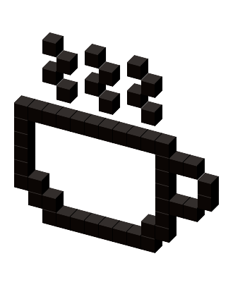

Java
Обучението по този език подобрява логическото Ви мислене. Това е обектно-ориентиран език. С Java
получавате възможност за изключително високо заплащане, с която може да се хвалите пред приятели,
роднини и други индивиди. Комбинирането на Java с някой друг програмен език е средство за създаване
на мощни приложения.
Още...
Java Script
Без да се бъркате с Java, JavaScript Ви позволява да създавате интерактивни уебсайтове. JavaScript се
превърна в основен такъв за уеб технологиите, заедно със HTML и CSS. Езика е подходящ, както за
'фронт-енд', както и за 'бек-енд' програисти. JavaScript сега се използва и за създаването на
мобилни и компютърни приложения, също и за разработването на някой игри. Пуснете JavaScript и във
вашия живот - нека създате къща, кола и каквото се сетите.Още...